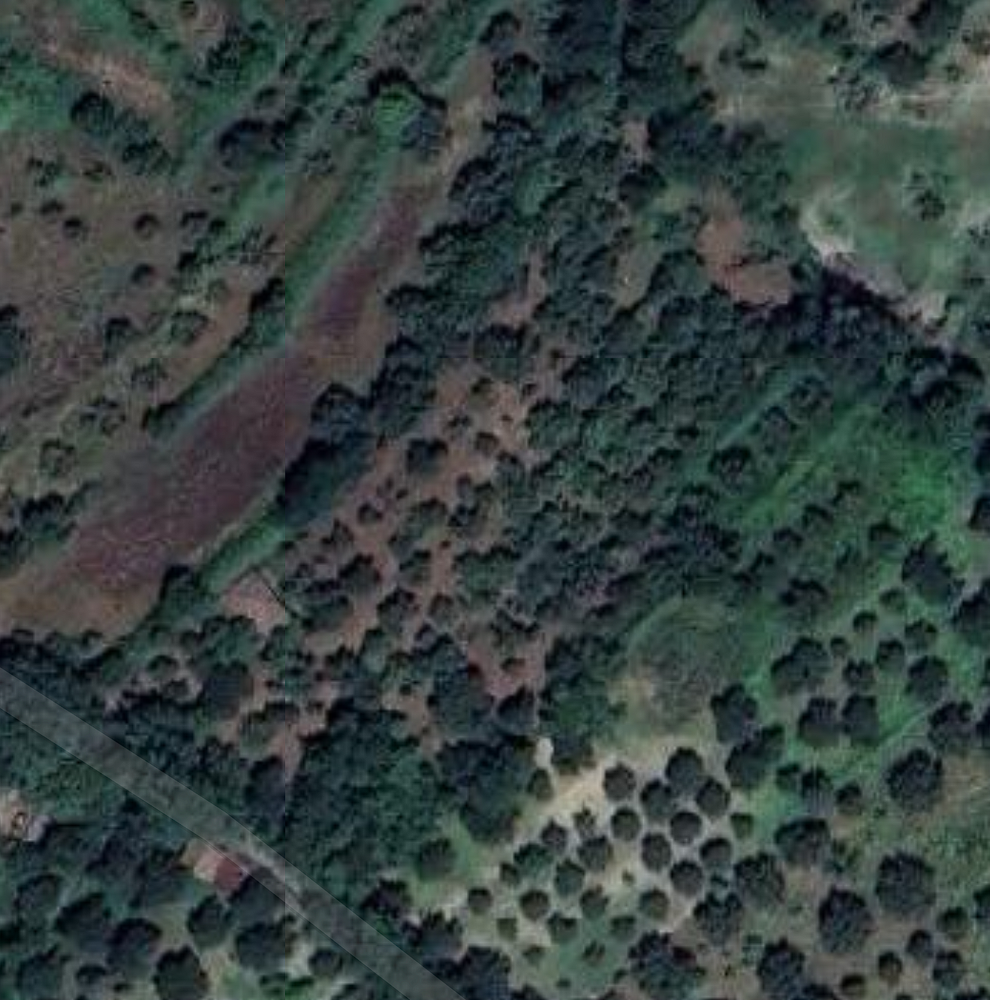

Benvenuti su Olivabot
Olivabot utilizza droni e tecnologia avanzata per supportare gli agricoltori nella gestione sostenibile degli uliveti.
Uliveto 1: Analisi e Gestione
In questo caso d'uso, abbiamo utilizzato i nostri droni per mappare l'uliveto, eseguire una ricostruzione 3D e condurre un'analisi multispettrale per fornire raccomandazioni precise agli agricoltori.
1. Mappa di Google Maps
La mappa iniziale dell'uliveto è stata ottenuta tramite Google Maps, offrendo una panoramica dell'area agricola.
2. Riprese dal Drone
Il drone ha catturato immagini dettagliate dell'uliveto, fornendo dati essenziali per la nostra analisi agricola.

3. Ricostruzione 3D
La mappatura 3D ha permesso una visualizzazione accurata della struttura dell'uliveto, facilitando le decisioni relative alla potatura e all'ottimizzazione della crescita degli alberi.

4. Analisi Multispettrale
L'analisi multispettrale ha individuato aree con potenziali problemi di salute degli alberi e ha fornito suggerimenti per l'uso mirato di fertilizzanti.